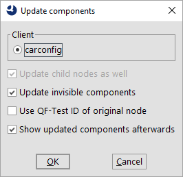

| Version 6.0.3 |
During the course of test creation, some unused components can collect in the component tree. From time to time you can Clean up the component tree. On the other hand, recognition characteristics can change because of changes in the application interface. Before changes accumulate across multiple interface changes and break recognition, it makes sense to Update 'Components' in the affected windows and dialogs.
Each time a sequence is recorded, new nodes are created for the components which are not yet part of the test suite. If the sequence is deleted later, theses 'Components' remain which gives 'Components' a certain tendency to accumulate.
The context menu for 'Window' and 'Component' nodes has two entries called »Mark unused components...« and »Remove unused components«, which mark or remove entirely those 'Components' which no other node in this test suite refers to.
Be careful if you use variables in 'QF-Test component ID' attributes since the automatic mechanism does not resolve them.
If 'Components' from other test suites are referenced, these should be part of the same project or the attribute 'Dependencies (reverse includes)' of the 'Test-suite' must be set correctly.
It is almost unavoidable that components of the SUT change with time. As described, this is not a big problem as long as identifiers were consequently used, since QF-Test can then handle almost every kind of change.
Without identifiers, changes will accumulate with time and can reach a point at which the recognition fails. To avoid this problem, you should adjust the 'Components' in QF-Test to the current SUT from time to time. This can be done with the help of the menu entry »Update component(s)« which you can find in the context menu of any node below the 'Windows and components' node.
Note This feature can change a lot of information at once, so it can be difficult to judge if everything went well or if a component was recognized wrongly. You should always create a backup copy before updating lots of components. You should also proceed 'Window' by 'Window' and make sure that the components you want to update are visible in the SUT (excluding menu entries). After every step make sure that the tests still run cleanly.
Provided there is a connection to the SUT the following dialog will appear when using this function:
|
|  | ||
|
| Figure 5.13: Update components dialog | ||
If you are connected to multiple SUT clients you need to select one for the update.
Decide if you only want to update the selected 'Components' themselves or their child nodes as well.
You can also include components that are not currently visible in the SUT. This is most useful for menu entries.
The 'QF-Test ID' of an updated node is retained if "Keep QF-Test ID of original node" is selected. Otherwise, the node is given a 'QF-Test ID' generated by QF-Test, if meaningful information is available. Other nodes that refer to this 'QF-Test ID' are automatically adjusted. QF-Test also checks dependencies in the test suites that belong to the same project or that are listed in the attribute 'Dependencies (reverse includes)' of the 'Test-suite' node. These test suites are automatically loaded and indirect dependencies are also resolved.
Note In this case, the modified test suites are automatically opened so that the changes can be saved or undone.
After confirming with "OK", QF-Test will attempt to find the affected components in the SUT and collect current information. Components which cannot be found are skipped. Then the 'Component' nodes are adjusted to the current structure of the SUT GUI, which can also result in nodes being moved.
Note For large hierarchies of components, this extremely complex operation can take some time, up to a few minutes in extreme cases.
This feature is most useful if identifiers are used for the first time in the SUT. If you have already created some tests before convincing developers to assign identifiers, you can use this to apply these identifiers to your 'Components' and at the same time adjust the 'QF-Test IDs'. This works best if you can get a version of the SUT which is identical to the previous version except for the identifiers.
Note Very important note: Updating whole windows or hierarchies of components above a certain size often leads to an attempt to update components that are not present or invisible at that moment. In such a case it is very important to prevent false positive hits for these components. You can do this by temporarily setting the '... bonus' and '... penalty' options for recognition (subsection 37.3.4). In particular, set the 'Feature penalty' to a value below the 'Minimum probability' value, for example to 49, if you otherwise use the default values. Do not forget to restore the original values afterwards.
If you need to change the setting of the Name override mode (replay) and Name override mode (record) options, for example because component identifiers have turned out to be ambiguous, first change only the option for recording. When the update is finished, follow up the option for playback accordingly.
| Last update: 9/6/2022 Copyright © 1999-2022 Quality First Software GmbH |